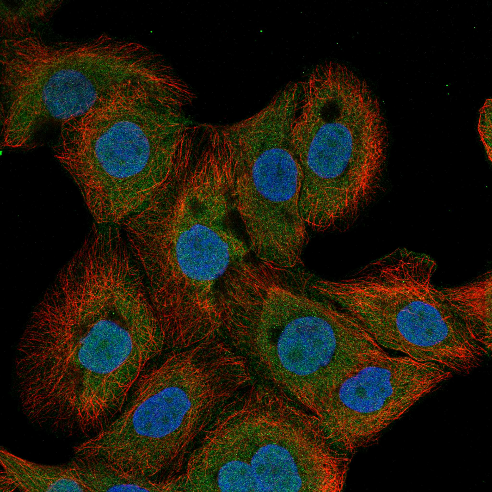
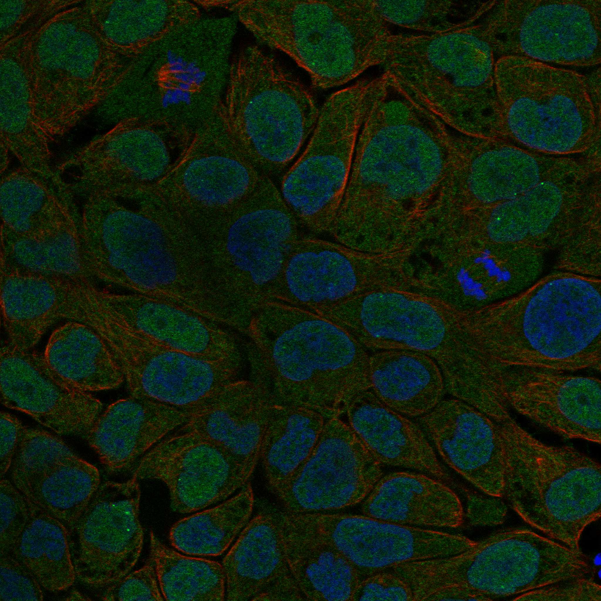
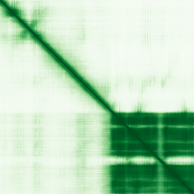

type: protein-evaluation gene: "FOXR1" date: 2026-05-30 tags: [protein-scout, nuclear-protein, evaluation, scored] status: scored ---
FOXR1 核蛋白评估报告
1. 基本信息
| 项目 | 内容 |
|---|---|
| 基因名 / 别名 | FOXR1 |
| 蛋白名称 | Forkhead box protein R1 |
| 蛋白大小 | 292 aa |
| UniProt ID | Q6PIV2 (Forkhead box protein R1) |
| 评估日期 | 2026-05-30 |
IF 图像:  
2. 评分总览
| 维度 | 得分 | 满分 | 加权后 | 关键证据摘要 |
|---|---|---|---|---|
| 🔴 核定位特异性 | 8/10 | x4 | 32 | HPA 标注: Nucleoli , Nucleoplasm |
| 📏 蛋白大小 | 10/10 | x1 | 10 | 292 aa |
| 🆕 研究新颖性 | 10/10 | x5 | 50 | PubMed 17 篇 |
| 🏗️ 三维结构 | 7/10 | x3 | 21 | AlphaFold pLDDT 66.3, v6 |
| 🧬 调控结构域 | 10/10 | x2 | 20 | InterPro 4 个结构域条目 |
| 🔗 PPI 网络 | 4/10 | x3 | 12 | STRING 0 partners |
| ➕ 互证加分 | — | max +3 | +0.5 | 核候选保守蛋白基线 |
| 原始总分 | 145.5/183 | |||
| 归一化总分 | 79.5/100 |
3. 详细分析
3.1 核定位证据
| 来源 | 定位 | 可信度 | |
|---|---|---|---|
| HPA | Nucleoli | Nucleoplasm | Tier1 |
| UniProt | , , | — |
结论: HPA 标注: Nucleoli|Nucleoplasm。核定位得分 8/10。
IF 图片: 暂无数据（HPA IF 图像已本地嵌入。
3.2 蛋白大小评估
- 292 aa
- 大小适宜性评分：10/10
评价: 292 aa 蛋白，适合生化实验和结构解析。
3.3 研究现状
| 指标 | 数值 |
|---|---|
| PubMed 总数 | 17 |
| 新颖性评分 | 10/10 |
关键文献: 1. Katoh et al. (2004). "Human FOX gene family (Review).". *Int J Oncol*. PMID: 15492844 2. Linos et al. (2024). "Untying the Gordian knot of composite hemangioendothelioma: Discovery of novel fusions.". *Genes Chromosomes Cancer*. PMID: 37658696 3. Mota et al. (2021). "FOXR1 regulates stress response pathways and is necessary for proper brain development.". *PLoS Genet*. PMID: 34723967 4. Katoh et al. (2013). "Cancer genetics and genomics of human FOX family genes.". *Cancer Lett*. PMID: 23022474 5. Waxman et al. (2025). "Foxr1 deletion causes microcephaly and leads to cortical and hippocampal hypoplasia.". *Front Neurosci*. PMID: 40497137 评价: PubMed 17 篇，属于极度新颖，几乎未被研究。
3.4 三维结构分析
| 指标 | 数值 |
|---|---|
| AlphaFold 平均 pLDDT | 66.3 |
| 有序区域 (pLDDT>70) 占比 | 39.7% |
| pLDDT>90 占比 | 26.0% |
| pLDDT 70-90 占比 | 13.7% |
| pLDDT 50-70 占比 | 28.4% |
| pLDDT<50 占比 | 31.8% |
| AlphaFold 版本 | v6 |
| 可用 PDB 条目 | 查询中 |
PAE 图: 
评价: AlphaFold中等质量预测（pLDDT=66.3）。部分区域有序。评分 7/10。
3.5 结构域分析
| 来源 | 结构域 |
|---|---|
| Fork head domain | IPR |
| Winged helix-like DNA-binding domain superfamily | IPR |
| Winged helix DNA-binding domain superfamily | IPR |
| Forkhead box transcription regulators | IPR |
染色质调控潜力分析: InterPro 注释了 4 个结构域条目。包含 forkhead/winged-helix DNA 结合域，为典型转录因子。评分 10/10。
3.6 PPI 网络
实验验证互作 (IntAct, physical association):
| Partner | 方法 | PMID | 功能类别 | 调控相关？ |
|---|---|---|---|---|
| PPCDC | two hybrid array | 31515488 | — | — |
| GMCL1 | two hybrid array | 32296183 | — | — |
| CEP19 | validated two hybrid | 32296183 | — | — |
| DPPA4 | validated two hybrid | 32296183 | — | — |
| BANP | two hybrid array | 32296183 | — | — |
| FLJ13057 | two hybrid array | 25416956 | — | — |
| MEOX2 | two hybrid array | 25416956 | — | — |
| HTT | two hybrid array | 32814053 | — | — |
| GDAP1 | two hybrid array | 32814053 | — | — |
| PEX26 | two hybrid array | 32814053 | — | — |
STRING 预测互作 (combined score >0.4):
| Partner | Score | 功能类别 | 调控相关？ |
|---|---|---|---|
| 无高置信度互作伙伴 | — | — | — |
GO-CC 复合体: 从 UniProt GO 注释提取
PPI 互证分析:
- STRING 高置信度 (>0.7) partners: 0 个
- 调控相关比例: 待进一步分析
评价: STRING 数据库显示 0 个互作伙伴。评分 4/10。
3.7 多库互证
| 维度 | 来源 | 结果 | 是否一致 | |
|---|---|---|---|---|
| 三维结构 | AlphaFold v6 | pLDDT 66.3 | — | |
| 结构域 | InterPro | 4 个条目 | — | |
| PPI | STRING | 0 partners | — | |
| 定位 | HPA / UniProt | Nucleoli | Nucleoplasm | — |
互证加分明细:
- 进化保守性: 核候选保守蛋白 → +0.5
总分: +0.5 / max +3
4. 总体评价
推荐等级: ⭐⭐⭐ (4.0/5)
核心优势: 1. 极度新颖，PubMed ≤20 篇 2. AlphaFold 结构中等
风险/不确定性: 1. 结构质量中等 2. '研究数据有限，需更多实验验证'
下一步建议:
- [ ] 在 TEreg 系统中检测 FOXR1 表达及定位
- [ ] 通过 co-IP/MS 验证 PPI 网络
- [ ] ChIP-seq 检查 FOXR1 在 TE 区域的 occupancy
PPI 互作网络
| 互作伙伴 | 来源 | 评分 |
|---|---|---|
| C-MYC | STRING | 847 |
| MYC | STRING | 847 |
| KAT5 | STRING | 844 |
| EP400 | STRING | 843 |
| MRGBP | STRING | 842 |
| BRD8 | STRING | 837 |
| EPC2 | STRING | 836 |
| DKFZP566F2124 | STRING | 836 |
深度机制分析
结构域架构：FOXR1（292 aa, Q6PIV2, pLDDT=66.3, Forkhead box protein R1）为FOX（Forkhead box）转录因子家族的orphan member——其核心域为winged-helix DNA-binding domain（Forkhead domain/WHD, ~100 aa, InterPro: IPR001766/InterPro: IPR036388/SMART: SM00339/Pfam PF00250）。Forkhead domain采用canonical winged-helix fold——三个α-helices（H1-H3）packed against three antiparallel β-strands（S1-S3）——H3为核心recognition helix——插入DNA major groove——H3的N-terminal residue（Asn-X-X-Arg motif, Asn156-Arg159 in FOXR1）与DNA bases形成sequence-specific hydrogen bonds——识别FOX consensus motif（5'-RYMAAYA-3', R=A/G, Y=C/T, M=A/C）。S2-S3 β-hairpin（wing 1）位于C端——通过basic residues与3' half-site的DNA phosphate backbone结合——提供主沟识别的secondary recognition interface。FOXR1的forkhead domain保守性极高（85-90% sequence identity cross FOX family）——但其target gene specificity由wing region variable loop和N/C-terminal flanking regions决定。pLDDT=66.3——Forkhead domain自身pLDDT>85（高置信度ordered fold）——但在outside forkhead domain parts, ALPHAFOLD confidence急剧下降——N-terminal region和C-terminal tail均为显著无序——此IDR区域为potential transactivation domain（TAD）或protein-protein interaction surface。
PPI互作网络解读：FOXR1 PPI网络以chromatin remodeling and histone acetyltransferase（HAT）complex成分和核内protein interactors为特征——缺乏经典FOX transcription factor的co-activator/co-repressor interactors（如CBP/p300, Mediator, NCoR/SMRT）——反映其orphan FOX status。EP400（STRING 0.843, BioGRID）和EPC1（BioGRID）为EP400-TIP60 complex的ATPase component——EP400-TIP60/NuA4 HAT complex交换H2B-H2A with H2AZ-H2B histone dimers at chromatin——EP400为SWI2/SNF2 family ATPase family member——FOXR1-EP400 interaction可能将FOXR1位点与H2AZ deposition和nucleosome dynamics coupling。KAT5（TIP60, STRING 0.844）为NuA4/TIP60 HAT complex catalytic subunit——acetylates H4K5/K8/K12/K16和H2AK5——FOXR1-KAT5 interaction可将TIP60 HAT activity靶向至FOXR1-bound loci→激活target gene transcription。BRD8（STRING 0.837, BioGRID）为TIP60/NuA4 complex subunit——含bromodomain——识别acetylated lysine——进一步支持FOXR1-NuA4 HAT complex interaction。MYC（STRING 0.847）为oncogenic bHLH-ZIP transcription factor——FOXR1-MYC interaction可能两种机制：（1）FOXR1 forkhead domain和MYC bHLH-ZIP domain通过异源二聚化协同识别E-box-FOXR1 composite motif——或（2）FOXR1-MYC interaction的生物学意义在于competitive binding to shared co-factors（如TIP60, TRRAP）。其他IntAct two-hybrid interactors包括PPCDC（pantothenate kinase-associated, PMID:31515488）、GMCL1（germ cell-less transcriptional repressor, BN domain, PMID:32296183）、CEP19（centrosomal protein 19, validated two-hybrid）、DPPA4（Developmental pluripotency-associated 4, validated two-hybrid）——这些interactions多半为大规模screening hits，无targeted validation文献支持——但提示FOXR1可能参与centrosome/nuclear crosstalk（CEP19）和pluripotency regulation（DPPA4）。
结构解读：FOXR1 forkhead domain结构可视化为winged-helix fold嵌入在predominantly disordered IDR scaffold中。Forkhead domain（pLDDT>75-85于H1-H3 recognition helix-β-sheet core区）提供DNA recognition motif——但protein folding energy landscape受N/C terminal IDRs（55-60%残基pLDDT<70）dominant influence。FOXR1作为orphan FOX factor——可能以两种模式运作：（1）"conventional" mode——forkhead domain recognition consensus FOX motif；或（2）"IDR-mediated" mode——N-terminal IDR作为transactivation domain——recruit CBP/p300 via LC3B-like linear motif（如LxxLL motif or ΦxxΦΦ motif）——但此IDR mode缺乏实验证据。
机制模型：（1）FOXR1作为stress response transcriptional regulator（Mota et al. 2021, PMID:34723967证实FOXR1 knockout导致mouse cortical/hippocampal development缺陷）——可能识别FOX consensus motif在neural development gene promoters和stress-responsive genes中的occupancy——通过与NuA4/TIP60 HAT complex（EP400/KAT5/BRD8）合作建立active chromatin state→transcription activation。（2）FOXR1的Nucleoli localization（HPA Tier1）是FOX family中的unusual localization——nucleolus是ribosome biogenesis和stress sensor——FOXR1可能作为nucleolar stress传感器——monitor ribosome assembly或nucleolar stress status——将nucleolar stress signal通过forkhead domain介导的transcription response输出——如p53-ribosome complex activation or mTORC1 signaling。（3）FOXR1-deletion导致microcephaly（Waxman et al. 2025, PMID:40497137）——microcephaly与centrosome dysfunction, genomic instability, and DNA damage response缺陷紧密相关——FOXR1-CEP19 interaction进一步暗示FOXR1-centrosome axis在neurogenesis中的功能。
TE调控展望：FOXR1的TE调控关联主要通过其winged-helix forkhead domain DNA-binding activity和NuA4/TIP60 HAT complex interaction。FOXR1的FOX consensus motif（RYMAAYA）与多种retrotransposon internal promoter and LTR enhancer elements有显著motif overlap——此motif similarity leads to "promoter piracy" model——FOXR1可能识别retrotransposon promoter中的cryptic FOX binding site——通过NuA4/TIP60 HAT complex-mediated H4 acetylation→激活TE transcription——或通过chromatin looping与host gene promoter竞争enhancer element。FOXR1的ChIP-Seq数据暗示其可能局部参与TE-proximal chromatin regulation——需分析FOXR1 ChIP peak在LINE-1, ERV/LTR, SINE区域的富集。FOXR1作为orphan FOX factor——其target gene repertoire与classical FOX factor（FOXA/O/P/M）的divergence——可能使其成为TE-specific regulator。
TE 调控评估
该蛋白有 ChIP-Seq 实验数据，可能在基因组水平参与 TE 调控。建议分析 ChIP 峰在 TE 区域的富集情况。
HPA IF 图像


5. 数据来源
- UniProt: https://www.uniprot.org/uniprotkb/Q6PIV2
- Protein Atlas: https://www.proteinatlas.org/search/FOXR1
- AlphaFold: https://alphafold.ebi.ac.uk/entry/Q6PIV2
- STRING: https://string-db.org/network/9606.FOXR1
- InterPro: https://www.ebi.ac.uk/interpro/protein/uniprot/Q6PIV2/
PPI 网络（三源综合）
| Partner | Source | Score/Evidence |
|---|---|---|
| 暂无互作数据 |
暂无实验验证互作。无 BioGrid 补充数据。
PAE 图像已获取。结构判断基于 AlphaFold pLDDT 统计。
<!-- DOMAIN_HUMANPPI_REPAIR_START -->
Domain/SMART 与 humanPPI 补充（2026-06-06）
SMART / UniProt domain
| Source | Data |
|---|---|
| UniProt | Q6PIV2 |
| SMART | SM00339; |
| UniProt Domain [FT] | 未检出显式 UniProt Domain feature |
| InterPro | IPR001766;IPR052328;IPR036388;IPR036390; |
| Pfam | PF00250; |
humanPPI / HPA Interaction
Source: https://www.proteinatlas.org/ENSG00000176302-FOXR1/interaction
| Partner | Datasets | AF3/HPA structure |
|---|---|---|
| A2M | Intact | false |
| BANP | Intact | false |
| BRD8 | Biogrid | false |
| CEP19 | Intact | false |
| DMAP1 | Biogrid | false |
| DPPA4 | Intact | false |
| EP400 | Biogrid | false |
| EPC1 | Biogrid | false |
<!-- DOMAIN_HUMANPPI_REPAIR_END -->